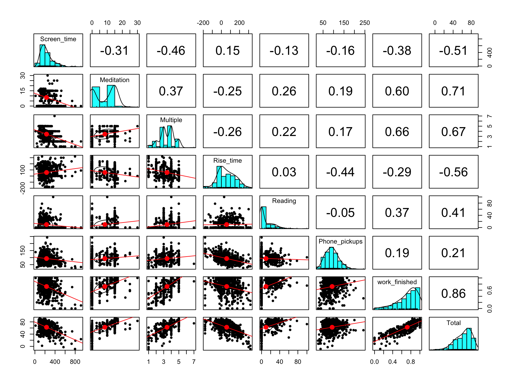
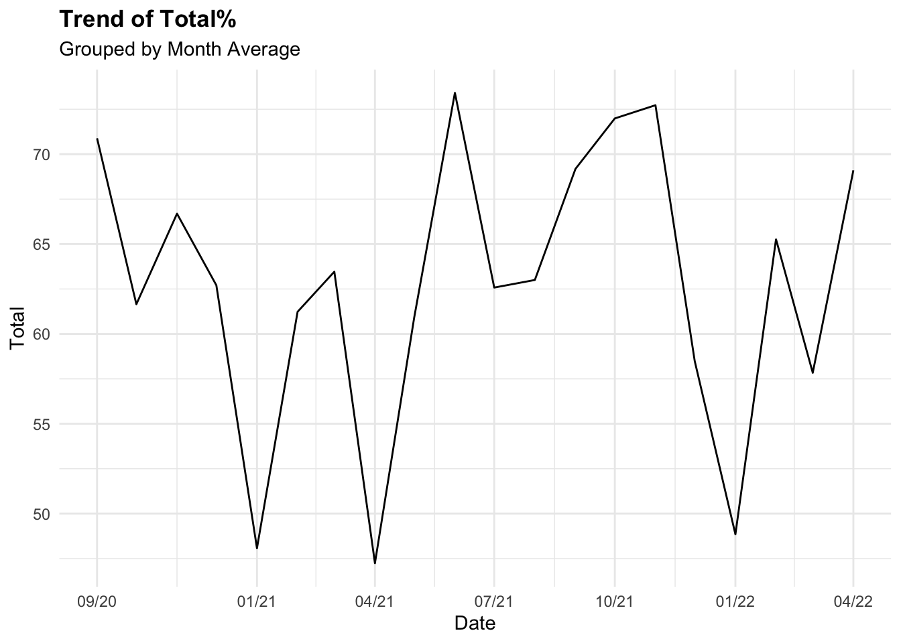
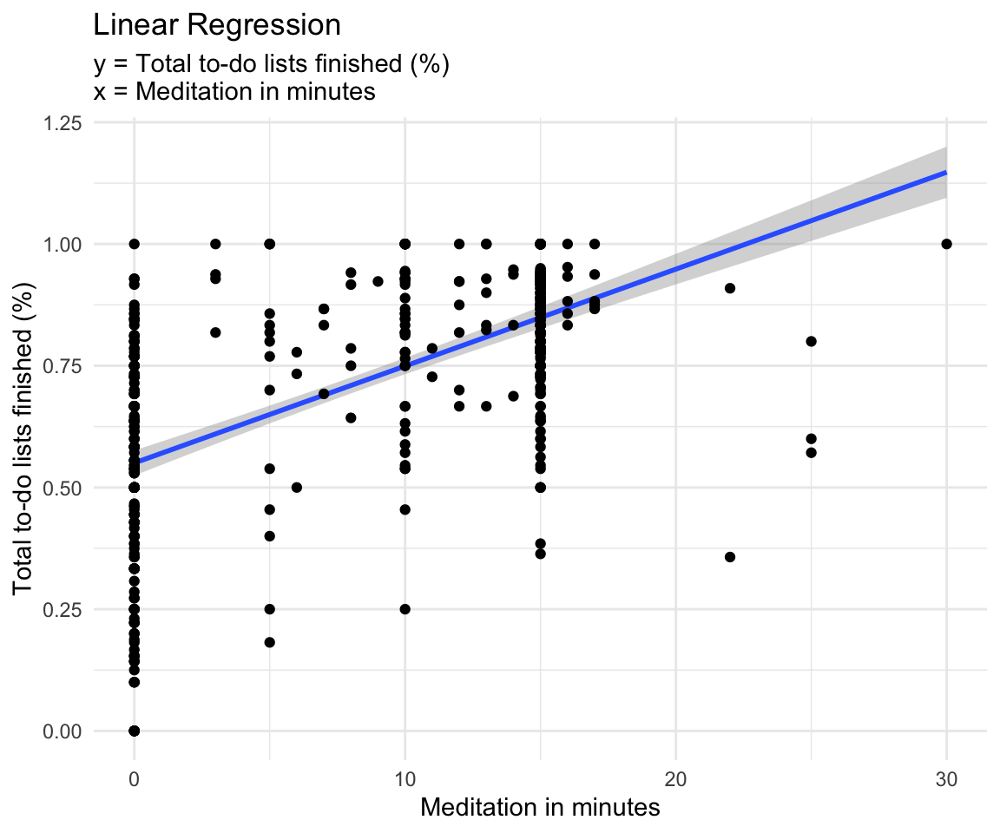
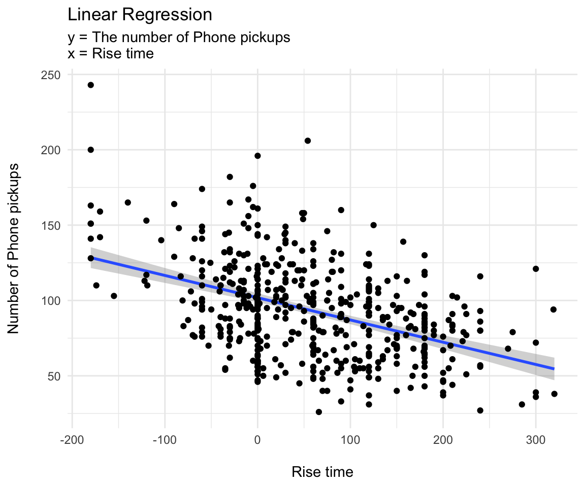

Main Variables: Descriptive Statistics

Main Varibles Descriptions
- Reading: reading duration in minutes
- Meditation: meditation duration in minutes
- Phone_pickups: number of times I picked up my phone
- Screen_time: duration of spent time on my phone in minutes
- Rise_time: the variation in minutes from the intended rise time
- 0: Woke up on time
- -n: Woke up n minutes earlier than intended
- +n: Woke up n minutes later than intended
Drink: Whether or not I drank the day before (Boolean)
Work_finished: Finished_tasks / Total_tasks
Multiple: Subjective grade given each day
- Considered factors: Mentality, Satisfaction, Productivity, Social interaction, and Tech consumption
Total: The sum of the percentages calculated of above variables
Main Variables Correlations
To find the relationships between these variables and how they affect my lifestyle, we will first observe the relationships within variables
- Use pairs.panels function in psych module
- The diagonal histograms demonstrates the distribution of each variable
- The bottom left triangle represents a scatter plot with the best fit line
- The top right triangle represents a correlation coefficient for each pair, which ranges from -1 to 1
- If the coefficient is close to 1, it means that the pair holds a positive relationship and a negative relationship for -1.
- Correlation Coefficient Formula:
\[r = \dfrac{\sum(x_i-\bar{x})(y_i-\bar{y})}{\sqrt{\sum(x_i-\bar{x})^2\sum(y_i-\bar{y})^2}}\]
correlation_plot <- all_dat %>%
dplyr::select(c(Screen_time, Meditation, Multiple, Rise_time,
Reading,Phone_pickups, work_finished, Total))
pairs.panels(correlation_plot, lm = TRUE)

School Variable
ggplot(data = all_dat, aes(x = work_finished,
color = School))+
geom_density()+
labs(title = "Density Plot of Work Finished% for different School periods",
x = "Work Finished (%)")+
theme(plot.title = element_text(face = "bold")) +
scale_color_discrete(name = "School Qtrs")

Weekday Variable
all_dat$Weekdays <- factor(all_dat$Weekdays,levels = c("Monday", "Tuesday", "Wednesday", "Thursday","Friday","Saturday","Sunday"))
ggplot(data = all_dat)+
geom_boxplot(aes(x = Weekdays,
y = work_finished, color = Weekdays))+
theme(legend.position = "None")+
labs(title = "Work finished % by week days",
subtitle = "Data: all_dat (500+ observations)",
x = "", y = "Work Finished (%)")+
theme(plot.title = element_text(face = "bold"))

Time Trend (Total %)
all_dat_month <- all_dat %>%
dplyr::group_by(year, month) %>%
dplyr::summarise(Total = mean(Total),
Rise_time = mean(Rise_time)) %>%
dplyr::mutate(Date = make_date(year, month)) %>%
arrange(Date)
ggplot(all_dat_month)+
geom_line(aes(x=Date, y=Total))+
labs(title = "Trend of Total%",
subtitle = "Grouped by Month Average")+
theme(plot.title = element_text(face = "bold")) +
scale_x_continuous(breaks = ymd("2020-09-01", "2021-01-01","2021-04-01", "2021-07-01", "2021-10-01","2022-01-01", "2022-04-01"),
labels=c("09/20", "01/21", "04/21", "07/21",
"10/21", "01/22","04/22"))

Time Trend (Total % - Rise time)
ggplot(all_dat_month)+
geom_line(aes(x=Date, y=Total-Rise_time))+
labs(title = "Trend of Total% - Rise time",
subtitle = "Larger positive differnce indicates higher productivity")+
theme(plot.title = element_text(face = "bold")) +
scale_x_continuous(breaks = ymd("2020-09-01", "2021-01-01", "2021-06-01",
"2022-01-01"))
- Note for Rise time:
- 0: Woke up on intended time
- Positive value: Later than intended
- Negative value: Earlier than intended
Main Variables: Linear Regressions
Simple Linear Regression
- Set:
- x = Explanatory Variable
- y = Dependent Variable
- \(\alpha\) = y-intercept
- \(\beta\) = slope
lm() function:Fitting Linear Models
- Finds fitted line(\(\alpha\) & \(\beta\)) by using the least-square method
- Least-square: by summing up the residual squares for different curves, it finds the “least squared” curve that best fit the data.
- Outputs \(R^2\), p-value and other meaningful calculations
- \(R^2\): It demonstrates how accurate the fitted line is to the data
- Formula: \(R^2 =1-\dfrac{Var(fit)}{Var(mean)}\) or \(1-\dfrac{RSS}{TSS}\)
- Ex: If we get.8, it means that \(x\) explains 60% of the variation in \(y\)
model <- lm(work_finished ~ Meditation, data = all_dat)
summary(model)
##
## Call:
## lm(formula = work_finished ~ Meditation, data = all_dat)
##
## Residuals:
## Min 1Q Median 3Q Max
## -0.61913 -0.09027 0.03438 0.12702 0.45108
##
## Coefficients:
## Estimate Std. Error t value Pr(>|t|)
## (Intercept) 0.548925 0.013352 41.11 <2e-16 ***
## Meditation 0.019423 0.001215 15.99 <2e-16 ***
## ---
## Signif. codes: 0 '***' 0.001 '**' 0.01 '*' 0.05 '.' 0.1 ' ' 1
##
## Residual standard error: 0.1941 on 508 degrees of freedom
## (3 observations deleted due to missingness)
## Multiple R-squared: 0.3348, Adjusted R-squared: 0.3335
## F-statistic: 255.7 on 1 and 508 DF, p-value: < 2.2e-16
ggplot(all_dat,aes(x=Meditation, y=work_finished))+
geom_smooth(method = "lm")+
geom_point()+
labs(title = "Linear Regression",
subtitle = "y = Total to-do lists finished (%) \nx = Meditation in minutes",
y = "Total to-do lists finished (%)", x = "Meditation in minutes")+
theme(plot.title = element_text(face = "bold"))+
theme_minimal()

model <- lm(Phone_pickups ~ Rise_time, data = all_morning_rt)
summary(model)
##
## Call:
## lm(formula = Phone_pickups ~ Rise_time, data = all_morning_rt)
##
## Residuals:
## Min 1Q Median 3Q Max
## -49.954 -21.348 -0.977 17.865 67.517
##
## Coefficients:
## Estimate Std. Error t value Pr(>|t|)
## (Intercept) 96.9544 2.4036 40.338 < 2e-16 ***
## Rise_time -0.1348 0.0263 -5.127 8.32e-07 ***
## ---
## Signif. codes: 0 '***' 0.001 '**' 0.01 '*' 0.05 '.' 0.1 ' ' 1
##
## Residual standard error: 28.16 on 162 degrees of freedom
## Multiple R-squared: 0.1396, Adjusted R-squared: 0.1343
## F-statistic: 26.28 on 1 and 162 DF, p-value: 8.318e-07
ggplot(all_dat,aes(x=Rise_time, y=Phone_pickups))+
geom_smooth(method = "lm")+
geom_point()+
labs(title = "Linear Regression",
subtitle = "y = The number of Phone pickups\nx = Rise time",
y = "Number of Phone pickups\n", x = "\nRise time")+
theme(plot.title = element_text(face = "bold"))+
theme_minimal()

Multiple regressions
- Set:
- y = Dependent Variable
- \(x_1,...x_n\) = n independent/explanatory variables
- \(\alpha\) = Constant or intercept
- \(\beta\) = weights for each \(x_1,...x_n\)
model <- lm(work_finished ~ Phone_pickups + Screen_time, data = all_morning_rt)
summary(model)
##
## Call:
## lm(formula = work_finished ~ Phone_pickups + Screen_time, data = all_morning_rt)
##
## Residuals:
## Min 1Q Median 3Q Max
## -0.51721 -0.09987 0.02263 0.14683 0.48197
##
## Coefficients:
## Estimate Std. Error t value Pr(>|t|)
## (Intercept) 0.6571157 0.0656765 10.005 < 2e-16 ***
## Phone_pickups 0.0020897 0.0005369 3.892 0.000145 ***
## Screen_time -0.0008283 0.0002164 -3.828 0.000185 ***
## ---
## Signif. codes: 0 '***' 0.001 '**' 0.01 '*' 0.05 '.' 0.1 ' ' 1
##
## Residual standard error: 0.2074 on 161 degrees of freedom
## Multiple R-squared: 0.1554, Adjusted R-squared: 0.1449
## F-statistic: 14.81 on 2 and 161 DF, p-value: 1.25e-06
Actual vs Prediction Visualization for Work_done (all_dat)
work_finished_all <- lm(work_finished ~ Meditation + Screen_time,
data = all_dat)
summary(work_finished_all)
##
## Call:
## lm(formula = work_finished ~ Meditation + Screen_time, data = all_dat)
##
## Residuals:
## Min 1Q Median 3Q Max
## -0.56192 -0.09524 0.02602 0.12499 0.46508
##
## Coefficients:
## Estimate Std. Error t value Pr(>|t|)
## (Intercept) 6.674e-01 2.291e-02 29.128 < 2e-16 ***
## Meditation 1.720e-02 1.224e-03 14.051 < 2e-16 ***
## Screen_time -4.358e-04 6.971e-05 -6.252 8.63e-10 ***
## ---
## Signif. codes: 0 '***' 0.001 '**' 0.01 '*' 0.05 '.' 0.1 ' ' 1
##
## Residual standard error: 0.1872 on 507 degrees of freedom
## (3 observations deleted due to missingness)
## Multiple R-squared: 0.3824, Adjusted R-squared: 0.38
## F-statistic: 157 on 2 and 507 DF, p-value: < 2.2e-16
plot(work_finished_all )


Logistic Regression
Single Logistic Regression
model_logit <- glm(work_finished_mr_exc ~ night_phone,
data = all_morning_rt, family = binomial(link = "logit"))
m = margins(model_logit)
ame_result = summary(m)
ame_result
## factor AME SE z p lower upper
## night_phoneTrue 0.1869 0.0772 2.4206 0.0155 0.0356 0.3382
How to interpret the Average Marginal Effect(AME) values
- Interpret them as percentage points rather than percentage
- work_finished .1911 : Indicates that if I do not touch my phone the night before, I am 19.06 percentage point more likely to get more tasks done.
ggplot(data = ame_result) +
geom_point(aes(factor , AME)) +
geom_errorbar(aes(x = factor, ymin = lower, ymax = upper),
width = .5) + geom_hline ( yintercept = 0) +
theme_minimal ( ) +
theme(axis.text.x = element_text(angle = 90))
Meditation with all_dat
##
## Call:
## lm(formula = Meditation ~ Multiple + Phone_pickups + Screen_time +
## Drink + Reading + Rise_time + Total_todo + Total + work_finished,
## data = all_dat)
##
## Residuals:
## Min 1Q Median 3Q Max
## -11.461 -2.862 0.146 2.743 14.746
##
## Coefficients:
## Estimate Std. Error t value Pr(>|t|)
## (Intercept) -28.894806 2.090236 -13.824 < 2e-16 ***
## Multiple -1.834277 0.284870 -6.439 2.83e-10 ***
## Phone_pickups 0.054325 0.007140 7.609 1.39e-13 ***
## Screen_time 0.012205 0.001990 6.133 1.75e-09 ***
## Drink 0.361582 0.363018 0.996 0.320
## Reading -0.102329 0.015735 -6.503 1.91e-10 ***
## Rise_time 0.049432 0.003606 13.707 < 2e-16 ***
## Total_todo -0.103133 0.074793 -1.379 0.169
## Total 0.739348 0.038309 19.300 < 2e-16 ***
## work_finished -15.293361 2.055608 -7.440 4.44e-13 ***
## ---
## Signif. codes: 0 '***' 0.001 '**' 0.01 '*' 0.05 '.' 0.1 ' ' 1
##
## Residual standard error: 4.292 on 499 degrees of freedom
## (4 observations deleted due to missingness)
## Multiple R-squared: 0.6391, Adjusted R-squared: 0.6326
## F-statistic: 98.19 on 9 and 499 DF, p-value: < 2.2e-16
Multiple with all_dat
- Multiple data length: 450 +
# Multiple data all
model <- lm(work_finished ~ Screen_time + Meditation + Rise_time + Phone_pickups +
Reading + Multiple, data = all_dat)
all_dat$pred_work_finished <- predict(model, newdata = all_dat)
multiple_all <- lm(Multiple ~ Phone_pickups+ Screen_time+ Drink+ Meditation+
Reading+ Rise_time+ Run + Total_todo + Total ,
data = all_dat)
summary(multiple_all)
##
## Call:
## lm(formula = Multiple ~ Phone_pickups + Screen_time + Drink +
## Meditation + Reading + Rise_time + Run + Total_todo + Total,
## data = all_dat)
##
## Residuals:
## Min 1Q Median 3Q Max
## -2.42880 -0.42278 -0.01013 0.42823 2.04377
##
## Coefficients:
## Estimate Std. Error t value Pr(>|t|)
## (Intercept) -0.3382761 0.3061052 -1.105 0.26965
## Phone_pickups 0.0048911 0.0010249 4.772 2.39e-06 ***
## Screen_time -0.0004815 0.0002876 -1.674 0.09472 .
## Drink -0.0247350 0.0539851 -0.458 0.64702
## Meditation -0.0445297 0.0060573 -7.351 8.02e-13 ***
## Reading -0.0114406 0.0023092 -4.954 9.94e-07 ***
## Rise_time 0.0039399 0.0004734 8.323 8.20e-16 ***
## Run 0.6928031 0.2591574 2.673 0.00776 **
## Total_todo -0.0175673 0.0108129 -1.625 0.10486
## Total 0.0624768 0.0038123 16.388 < 2e-16 ***
## ---
## Signif. codes: 0 '***' 0.001 '**' 0.01 '*' 0.05 '.' 0.1 ' ' 1
##
## Residual standard error: 0.6462 on 502 degrees of freedom
## (1 observation deleted due to missingness)
## Multiple R-squared: 0.5771, Adjusted R-squared: 0.5696
## F-statistic: 76.13 on 9 and 502 DF, p-value: < 2.2e-16
Actual vs Prediction Residual Visualization for Work_done (all_dat)
# graph for legibility# Plot of residual error as a function of prediction
ggplot(data = all_dat, aes(x = pred_work_finished,
y = pred_work_finished - work_finished)) +
geom_point(alpha = 0.2, color = "darkgray") +
geom_smooth(color = "darkblue") +
geom_line(aes(x = pred_work_finished,
y = 0), # Plotting the line, y = 0
color = "red", linetype = 2) +
ylab("residual error (prediction - actual)")
## `geom_smooth()` using method = 'loess' and formula 'y ~ x'
Testing Normality
library(dplyr)
set.seed(1234)
dplyr::sample_n(all_dat, 10)
## # A tibble: 10 × 25
## Date Finished Multiple Phone_pickups Screen_time Drink Key_words Meditation Mentality
## <chr> <dbl> <dbl> <dbl> <dbl> <dbl> <chr> <dbl> <dbl>
## 1 08/1… 5 3 144 167 0 0 0 0
## 2 10/1… 15 3 123 200 0 0 14 0
## 3 03/2… 14 4.6 62 177 0 ['Happy'… 15 5
## 4 01/1… 10 3.6 98 84 0 0 15 3
## 5 01/1… 9 3 74 304 0 0 15 0
## 6 03/1… 10 3.6 78 210 0 ['Exam',… 0 4
## 7 01/3… 4 3 61 440 0 0 0 0
## 8 12/2… 8 3.6 107 314 0 0 0 4
## 9 02/2… 15 4 97 132 0 0 15 0
## 10 01/2… 10 4 126 149 0 0 15 4
## # … with 16 more variables: Satisfaction <dbl>, Reading <dbl>, Productivity <dbl>,
## # Rise_time <dbl>, Run <dbl>, Social <dbl>, Tech <dbl>, Total <dbl>, Total_todo <dbl>,
## # work_finished <dbl>, School <chr>, Weekdays <fct>, month <chr>, day <chr>,
## # year <chr>, pred_work_finished <dbl>
# The central limit theorem tells us that no matter what distribution things
# have, the sampling distribution tends to be normal if the sample is large
# enough (n > 30).
# The R function shapiro.test() can be used to perform the Shapiro-Wilk test
# of normality for one variable (univariate):
shapiro.test(all_dat$Total)
##
## Shapiro-Wilk normality test
##
## data: all_dat$Total
## W = 0.94653, p-value = 1.192e-12
Determining Distributions
library(fitdistrplus)
## Loading required package: MASS
##
## Attaching package: 'MASS'
## The following object is masked from 'package:dplyr':
##
## select
## Loading required package: survival
library(logspline)
# The kurtosis and squared skewness of your sample is plotted as a blue point
# named "Observation".
descdist(all_dat$Multiple, discrete = FALSE)

## summary statistics
## ------
## min: 1 max: 7
## median: 3.4
## mean: 3.411306
## estimated sd: 0.9967667
## estimated skewness: -0.2471539
## estimated kurtosis: 2.976857
descdist(all_dat$Screen_time, discrete = FALSE)
## summary statistics
## ------
## min: 14 max: 915
## median: 199
## mean: 230.5517
## estimated sd: 125.8076
## estimated skewness: 1.59998
## estimated kurtosis: 6.768861
wf <- c(na.omit(all_dat$work_finished))
descdist(wf, discrete = FALSE)

## summary statistics
## ------
## min: 0 max: 1
## median: 0.7778
## mean: 0.7123051
## estimated sd: 0.2377938
## estimated skewness: -1.048532
## estimated kurtosis: 3.548142
#fit.beta <- fitdist(wf, 'beta', method = "mme")
# method = "mme": Moment matching estimation consists in equalizing theoretical
# and empirical moments.
#fit.gamma <- fitdist(all_dat$Screen_time, "gamma")
fit.normal <- fitdist(all_dat$Multiple, "norm")
#plot(fit.beta)
#plot(fit.gamma)
plot(fit.normal)